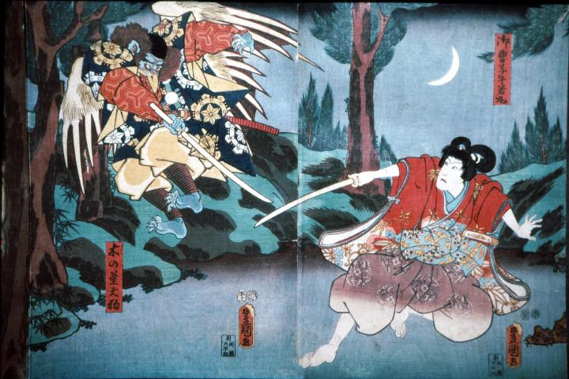

天狗；テング

空中に飛び去りながら牛若丸の太刀を受ける木の葉天狗。翼と嘴がある烏天狗で、派手な着物に黒い頭巾のようなものを身につけている。
著作者：歌川豊国／出典：親書誌：A5_pushkin_0028：（鞍馬の牛若丸；クラマノウシワカマル）／日付：2011／資源識別子：A5_pushkin_0028_0001_0000
Copyright (c)2010- International Research Center for Japanese Studies, Kyoto, Japan. All rights reserved.